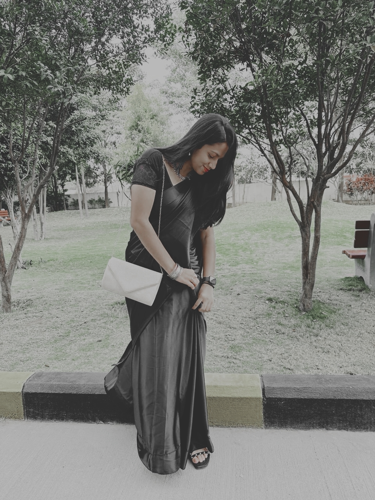
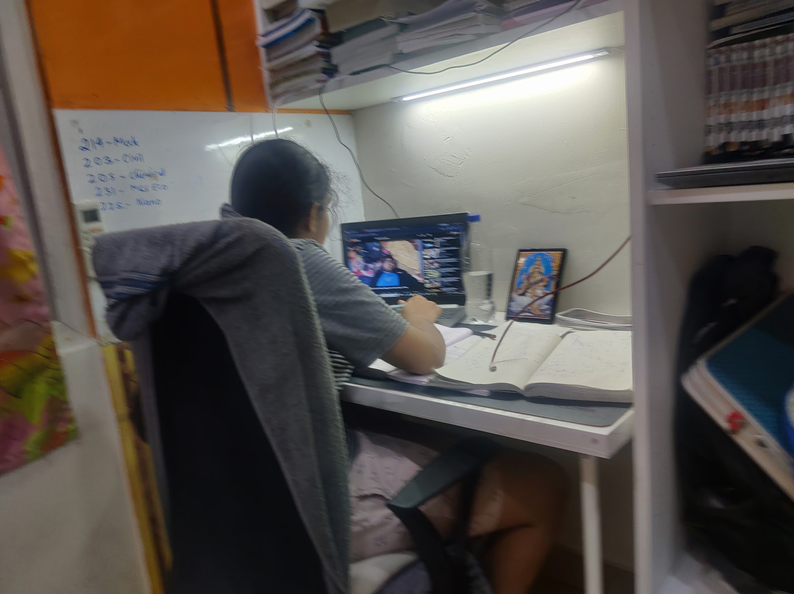
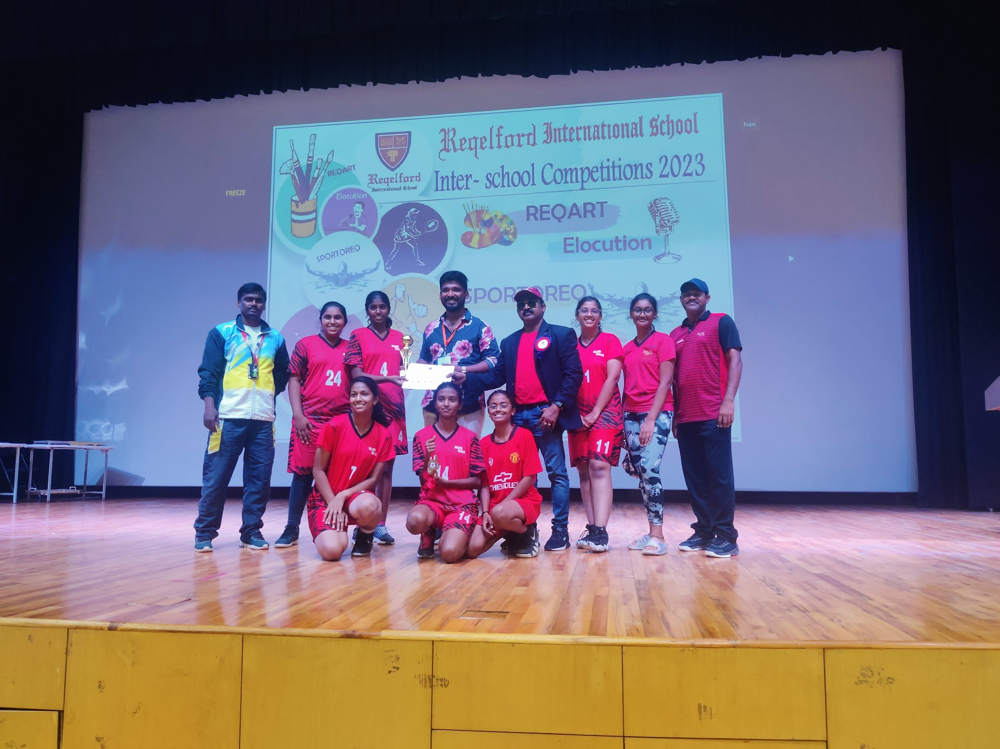
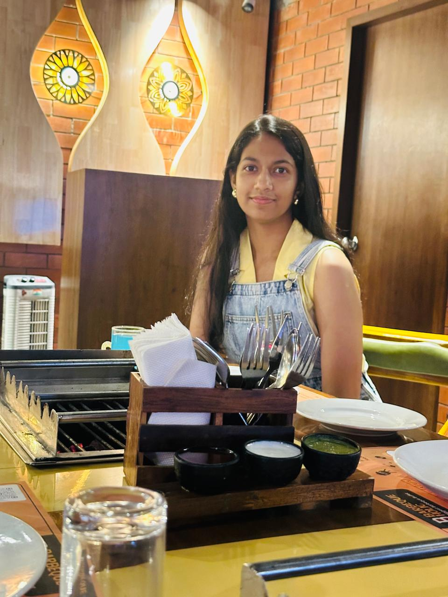
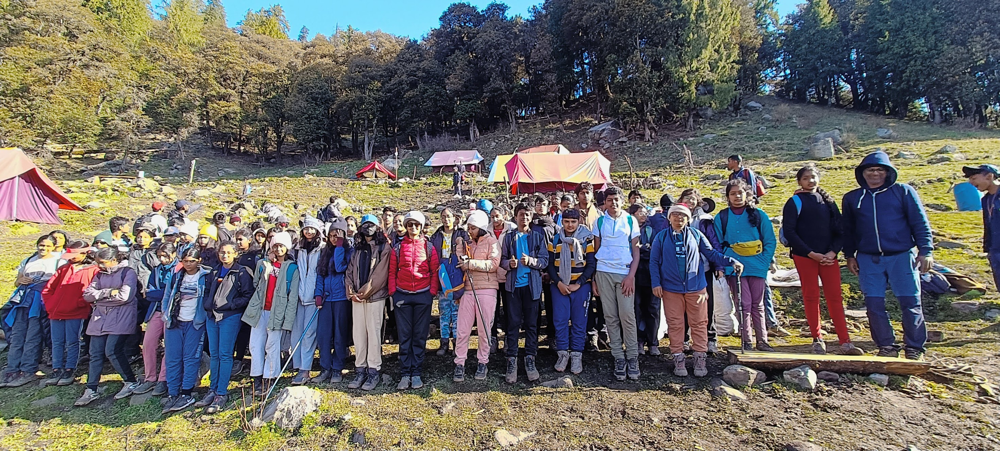
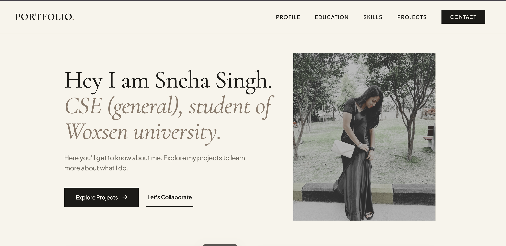
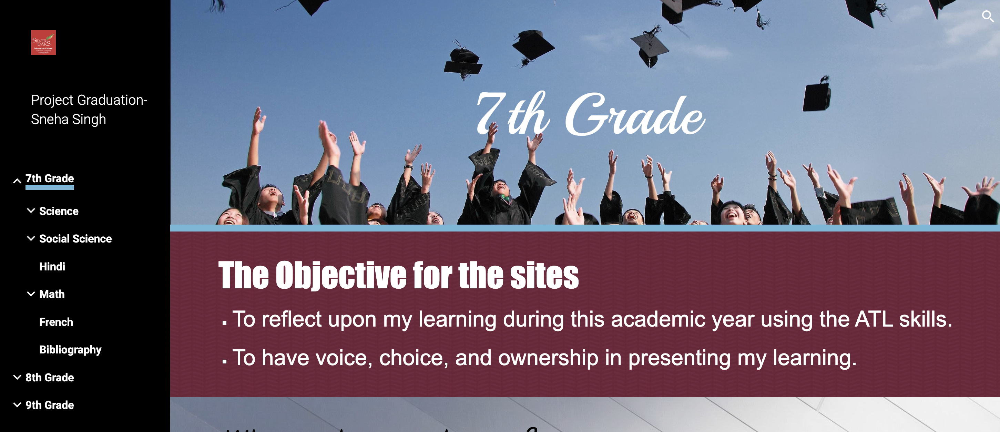

Hey I am Sneha Singh.
CSE (general), student of Woxsen university.
Here you’ll get to know about me. Explore my projects to learn more about what I do.

About
Me.
I am an aspiring Computer Science student with a strong passion for technology, innovation, and continuous learning. I enjoy building digital solutions that combine functionality with thoughtful design, while continuously expanding my technical expertise through hands-on projects. Alongside my technical interests, I am a highly sociable individual who values collaboration, effective communication, and meaningful connections. I enjoy working in team-oriented environments, exchanging ideas, and learning from diverse perspectives, believing that curiosity, adaptability, and teamwork are key to both personal and professional growth.
Beyond academics, I have a creative mindset and enjoy expressing it through video editing, digital content creation, dancing, and cooking. I also enjoy playing basketball and listening to music, as these activities help me stay balanced, inspired, and disciplined. As I begin my university journey, I am excited to collaborate with like-minded individuals, contribute to meaningful projects, and embrace opportunities that challenge me to grow as a developer, a teammate, and a lifelong learner.




Education
Bachelor of Technology (B.Tech) – Computer Science and Engineering (General)
Woxsen University • 2026 - 2030
First-Year Student Currently learning Java, Web Development, and Data Structures..
Class XII (State Board)
Naranyana • 2025 - 2026
Percentage: 91.2%
Note- For my 11th I was in Fittjee before. Later I changed my junior college to Naranyana.
Class X (CBSE)
Silver Oaks International School • 2017 - 2024
Percentage: 88%
Certifications
LEAP Programme
SOMUN Model United Nations
SOMUN Model United Nations
Speaker at SilverOaks
Debate competition - interschool level
Street Store
Core Competencies
Tools and languages I use to translate complex concepts into clean, maintainable code.
Featured Projects

Personal Portfolio Website
Building a responsive portfolio website using Java, HTML, CSS, JavaScript, and Spring Boot to showcase my profile. This being my very first project as well.
View Case Study
Project Graduation
As part of an alternative assessment during the COVID-19 pandemic, I developed a website to document and present my academic learning, projects, extracurricular activities, and achievements from the entire school year. The initiative replaced conventional online examinations and emphasized creativity, organization, and digital communication. .
View Case StudyAchievements & Honors
1st Place Winner — Won 7 gold medals in Basketball interschool level and got selected for playing nationals.
Student Council —Held the position of Vice Captain in the Student Council.